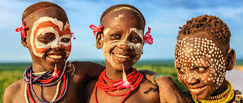

Culture (/ˈkʌltʃər/) is an umbrella term which encompasses the social behavior and norms found in human societies, as well as the knowledge, beliefs, arts, laws, customs, capabilities, and habits of the individuals in these groups.Humans acquire culture through the learning processes of enculturation and socialization, which is shown by the diversity of cultures across societies. A cultural norm codifies acceptable conduct in society; it serves as a guideline for behavior, dress, language, and demeanor in a situation, which serves as a template for expectations in a social group. Accepting only a monoculture in a social group can bear risks, just as a single species can wither in the face of environmental change, for lack of functional responses to the change.[2] Thus in military culture, valor is counted a typical behavior for an individual and duty, honor, and loyalty to the social group are counted as virtues or functional responses in the continuum of conflict. In the practice of religion, analogous attributes can be identified in a social group. Culture is considered a central concept in anthropology, encompassing the range of phenomena that are transmitted through social learning in human societies. Cultural universals are found in all human societies. These include expressive forms like art, music, dance, ritual, religion, and technologies like tool usage, cooking, shelter, and clothing. The concept of material culture covers the physical expressions of culture, such as technology, architecture and art, whereas the immaterial aspects of culture such as principles of social organization (including practices of political organization and social institutions), mythology, philosophy, literature (both written and oral), and science comprise the intangible cultural heritage of a society.In the humanities, one sense of culture as an attribute of the individual has been the degree to which they have cultivated a particular level of sophistication in the arts, sciences, education, or manners. The level of cultural sophistication has also sometimes been used to distinguish civilizations from less complex societies.
A society is a group of individuals involved in persistent social interaction, or a large social group sharing the same spatial or social territory, typically subject to the same political authority and dominant cultural expectations. Societies are characterized by patterns of relationships (social relations) between individuals who share a distinctive culture and institutions; a given society may be described as the sum total of such relationships among its constituent of members. In the social sciences, a larger society often exhibits stratification or dominance patterns in subgroups.Societies construct patterns of behavior by deeming certain actions or speech as acceptable or unacceptable. These patterns of behavior within a given society are known as societal norms. Societies, and their norms, undergo gradual and perpetual changes.Insofar as it is collaborative, a society can enable its members to benefit in ways that would otherwise be difficult on an individual basis; both individual and social (common) benefits can thus be distinguished, or in many cases found to overlap. A society can also consist of like-minded people governed by their own norms and values within a dominant, larger society. This is sometimes referred to as a subculture, a term used extensively within criminology, and also applied to distinctive subsections of a larger society.
Culture and society are intricately related. A culture consists of the “objects” of a society, whereas a society consists of the people who share a common culture. When the terms culture and society first acquired their current meanings, most people in the world worked and lived in small groups in the same locale. In today's world of 6 billion people, these terms have lost some of their usefulness because increasing numbers of people interact and share resources globally. Still, people tend to use culture and society in a more traditional sense.